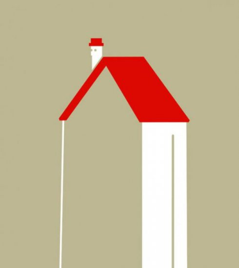
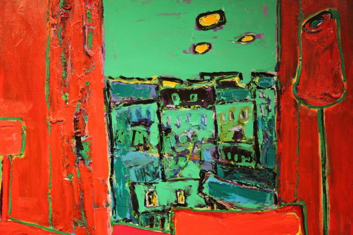
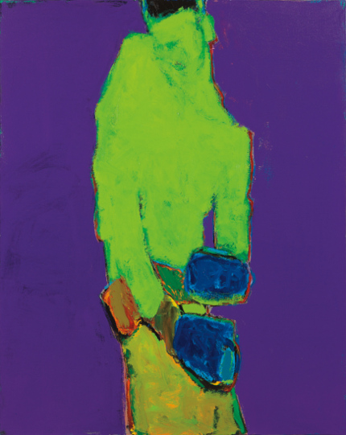
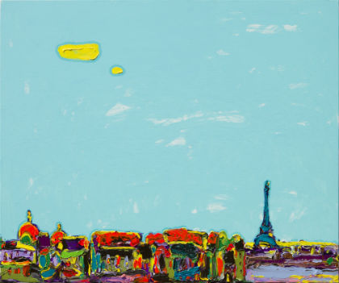

Мінімалізм
Мистецтво мінімалізму виходить з мінімальної трансформації використовуваних у процесі творчості матеріалів, простоти і однаковості форм, монохромності, творчого самообмеження художника.
Початок ХХ століття характеризується бурхливим зростанням промисловості, появою нових технологій. Різко змінюється темп життя. Ставний, повільний ХIХ століття поступається місцем стрімкому і напористому століттю новому.
Оскільки в соціальному житті суспільства тепер активно беруть участь всі верстви населення, а не тільки аристократична верхівка, стиль життя значною мірою спрощується і позбавляється від умовностей.
Сьогодні терміном «мінімалізм» грають повсюдно , але яка його природа в контексті сучасного мистецтва?Для мінімалізму характерний відмови від суб'єктивності, репрезентації, іллюзіонізму.
Відкидаючи класичні прийоми творчості і традиційні художні матеріали, мінімалісти використовують промислові та природні матеріали простих геометричних форм і нейтральних кольорів, малих обсягів, застосовують серійні, конвеєрні методи індустріального виробництва. Отримавши найбільш повний розвиток у живопису та скульптурі, мінімалізм, інтерпретована в широкому сенсі як економія художніх засобів, знайшов застосування і в інших видах мистецтва, передусім театрі, кінематографі.
Мінімалістський напрям в образотворчому мистецтві активно розвивався в шістдесяті і сімдесяті роки минулого століття. Основна ідея мінімалізму заснована на простоті форми і змісту, нівелюється персональне самовираження художника.
Художник-мінімаліст прагне дати глядачеві можливість гостріше відчути композиційне рішення твору, позбавивши композицію контексту і відволікаючих увагу деталей. У той же час мінімалізм здатний розбудити високі почуття і відчуття буття.
|  |  |  |
Щоб правильно розуміти, що таке мінімалізм не слід його схрещувати з простотою. Він передбачає ясність і зручність, якесь спрощення чи скасування, але не є простим.
Мінімалізм з точки зору духовної роботи, філософії осмисленого життя вкрай необхідний кожному людині, яка живе в суспільстві, де фігурують суперництво поряд з духом постійних перегонів, в той час як мінімалізм у живописі розуміють лише меншини.
Вгору